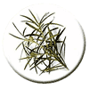

На основании исследований in vitro и одного успешного излечения резистентного случая заболевания можно говорить о том, что масло чайного дерева - это новая легко доступная и безопасная альтернатива для лечения чесотки.

На основании исследований in vitro и одного успешного излечения резистентного случая заболевания можно говорить о том, что масло чайного дерева - это новая легко доступная и безопасная альтернатива для лечения чесотки.
Shelley F. Walton, г. Дарвин, Австралия, пишет о том, что эфирное масло чайного дерева (Melaleuca alternifolia) - это традиционное средство, служащее аборигенам Австралии для лечения ушибов, укусов насекомых и различных кожных инфекций. Исследования показали его антимикробную активность против грамположительных (Staphylococcus aureus и др.) и грамотрицательных (Escherihia coli и др.) микроорганизмов, вирусов (herpes simplex viruses и др.), дрожжеподобных грибов (Candida albicans и др.). Однако пока учёные располагают недостаточным количеством информации об активности масла в отношении эктопаразитов человека.
5% раствор масла чайного дерева и некоторые его активные компоненты, в том числе терпинена-4-ол (terpinen-4-ol), показали высокую эффективность in vitro против Sarcoptes scabiei (чесоточного клеща), так как значительно сокращали время жизни паразита.
К примеру, один из пациентов был успешно вылечен 25% бензилбензоатом, содержащим 5% раствор масла в сочетании с пероральным ивермектином, оба препарата наносились неоднократно.
После применения 5% масла чайного дерева все клещи погибли через 3 часа, тогда как при использовании терпинена-4-ол, чтобы добиться 100% гибели паразитов, потребовалось 11,5 часов, хотя именно терпинен-4-ол является активным компонентом масла чайного дерева. При воздействии на клещей 5% переметрином и ивермектином на протяжении одного часа только 10% из них погибли, а мазь ивермектина оказалась и вовсе неэффективной.
Резистентность к противочесоточным соединениям постоянно растёт. Чесотку уже довольно сложно вылечить такими препаратами как линдан, кротамитон и бензилбензоат. Также возросла устойчивость клещей к 5% перметрину и пероральному ивермектину.
Эти факты, безусловно, вызывают тревогу и требуют поиска новых акарицидных средств. Одним из таких соединений может стать масло чайного дерева с терпиненом-4-ол в качестве главного действующего компонента.
Walton S.F., McKinnon M., Pizzutto S., Dougall A., Williams E., Currie B.J.
Acaricidal activity of Melaleuca alternifolia (tea tree) oil: in vitro sensitivity of sarcoptes scabiei var hominis to terpinen-4-ol.
Arch Dermatol 2004; 140(5): 563-6.